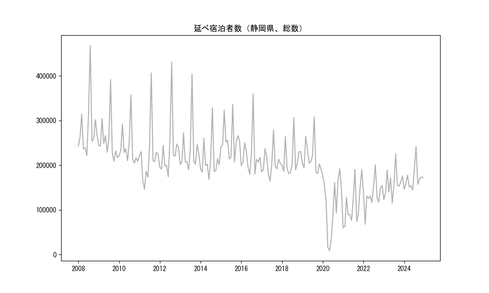
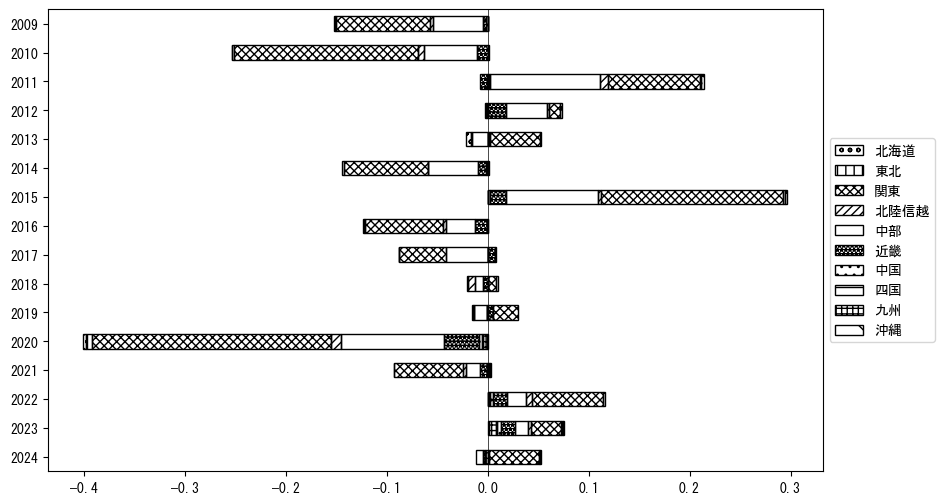
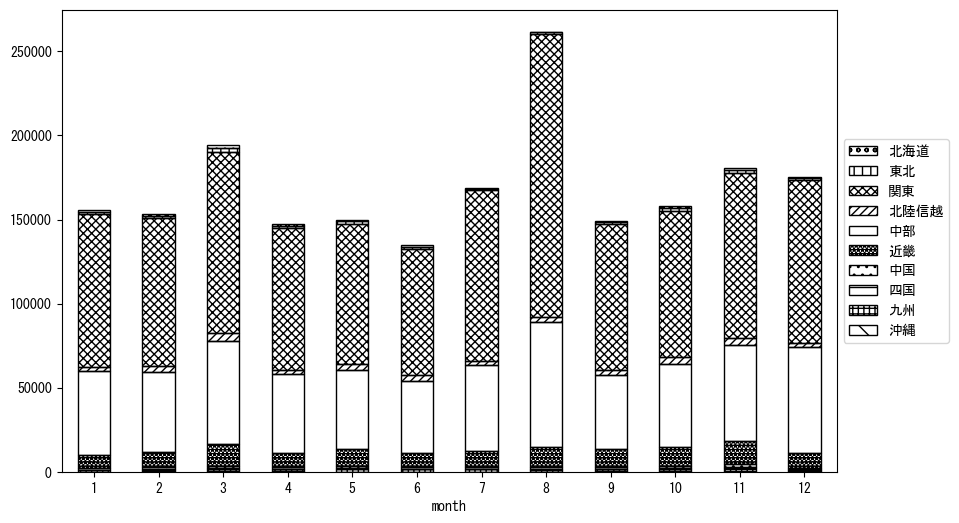

-
トップ
-
静岡県
静岡県
１．延べ宿泊者（総数）の推移
時系列グラフ

図１：静岡県内の従業員数100人以上の宿泊施設での延べ宿泊者数（国外、居住地不詳を含む総数）。
基本統計量
表１：従業員数100人以上の宿泊施設での延べ宿泊者の総数（国外、および居住地不詳を含む）に関する基本統計量。単位は人泊。平均は１か月あたりの平均値を表す。図１に対応。
| 2008年 |
281,854 |
66,016 |
222,035 (6月) |
468,195 (8月) |
| 2009年 |
256,002 |
49,671 |
208,803 (10月) |
391,979 (8月) |
| 2010年 |
239,530 |
44,151 |
204,944 (10月) |
357,541 (8月) |
| 2011年 |
220,473 |
65,644 |
146,509 (4月) |
406,697 (8月) |
| 2012年 |
235,703 |
66,983 |
174,231 (6月) |
430,896 (8月) |
| 2013年 |
234,353 |
58,167 |
190,114 (6月) |
403,972 (8月) |
| 2014年 |
211,443 |
43,321 |
168,490 (6月) |
328,672 (8月) |
| 2015年 |
255,457 |
39,197 |
207,303 (9月) |
335,814 (8月) |
| 2016年 |
222,261 |
47,877 |
179,290 (6月) |
359,978 (8月) |
| 2017年 |
205,405 |
29,905 |
164,778 (6月) |
278,683 (8月) |
| 2018年 |
214,432 |
38,005 |
181,348 (5月) |
306,791 (8月) |
| 2019年 |
216,996 |
37,074 |
181,578 (10月) |
308,384 (8月) |
| 2020年 |
113,349 |
64,831 |
9,274 (5月) |
192,329 (11月) |
| 2021年 |
110,848 |
46,035 |
60,195 (1月) |
190,515 (8月) |
| 2022年 |
134,676 |
31,066 |
68,102 (2月) |
201,333 (8月) |
| 2023年 |
159,061 |
29,981 |
115,330 (6月) |
225,870 (8月) |
２．宿泊者数の重心（年平均の推移）
図２：静岡県内の従業員数100人以上の宿泊施設での宿泊者数（国外、居住地不詳を除く）の重心（年平均の推移）。
全画面表示
重心の前年平均からの移動距離と方位、および緯度・経度
表２：重心の前年平均からの移動距離と方位、および緯度・経度。図２に対応。
| 2008年 |
— |
— |
35.4988 |
138.7722 |
| 2009年 |
南東 |
0.9km |
35.4925 |
138.7782 |
| 2010年 |
西 |
10.7km |
35.4770 |
138.6623 |
| 2011年 |
北西 |
2.5km |
35.4934 |
138.6436 |
| 2012年 |
西南西 |
5.7km |
35.4765 |
138.5841 |
| 2013年 |
東南東 |
6.1km |
35.4508 |
138.6436 |
| 2014年 |
東北東 |
2.8km |
35.4635 |
138.6702 |
| 2015年 |
東北東 |
2.5km |
35.4683 |
138.6973 |
| 2016年 |
東北東 |
0.4km |
35.4697 |
138.7010 |
| 2017年 |
西北西 |
7.1km |
35.4826 |
138.6244 |
| 2018年 |
東南東 |
4.0km |
35.4741 |
138.6670 |
| 2019年 |
南東 |
0.4km |
35.4718 |
138.6697 |
| 2020年 |
南東 |
7.5km |
35.4241 |
138.7289 |
| 2021年 |
東 |
1.4km |
35.4227 |
138.7440 |
| 2022年 |
西北西 |
6.3km |
35.4446 |
138.6796 |
| 2023年 |
西 |
11.7km |
35.4293 |
138.5521 |
運輸局別延べ宿泊者数
時系列（年平均）
 図３：静岡県内の従業員数100人以上の宿泊施設での１か月あたり平均宿泊者数（国外、居住地不詳を除く）の運輸局別内訳。
図３：静岡県内の従業員数100人以上の宿泊施設での１か月あたり平均宿泊者数（国外、居住地不詳を除く）の運輸局別内訳。
寄与度（前年からの変化率に対する）

図４：静岡県内の従業員数100人以上の宿泊施設での運輸局別宿泊者数（国外、居住地不詳を除く）から求めた寄与度。
３．宿泊者数の重心（月別）
図５：静岡県内の従業員数100人以上の宿泊施設での宿泊者数（国外、居住地不詳を除く）の重心（月別）。観測期間は2008年1月から2023年12月まで。
全画面表示
全期間（2008年1月～2023年12月）の平均と月別平均の比較
表３：全期間の平均から月別平均までの移動距離と方位、および緯度・経度。図５に対応。
| 全期間 |
— |
— |
35.4650 |
138.6761 |
| 1月 |
東北東 |
8.6km |
35.4837 |
138.7681 |
| 2月 |
北東 |
6.0km |
35.5067 |
138.7188 |
| 3月 |
北西 |
5.8km |
35.5064 |
138.6379 |
| 4月 |
南東 |
1.2km |
35.4574 |
138.6863 |
| 5月 |
西 |
6.0km |
35.4600 |
138.6099 |
| 6月 |
西 |
3.6km |
35.4674 |
138.6371 |
| 7月 |
東南東 |
4.4km |
35.4476 |
138.7192 |
| 8月 |
東 |
15.1km |
35.4609 |
138.8429 |
| 9月 |
南西 |
2.9km |
35.4447 |
138.6564 |
| 10月 |
西 |
7.3km |
35.4702 |
138.5963 |
| 11月 |
西 |
12.1km |
35.4570 |
138.5437 |
| 12月 |
南南東 |
5.6km |
35.4175 |
138.6972 |
運輸局別延べ宿泊者数
月別平均（2008年1月～2023年12月）

図６：静岡県内の従業員数100人以上の宿泊施設での宿泊者数（国外、居住地不詳を除く）の運輸局別内訳（月別）。
寄与度（全期間の平均から月別平均への変化率に対する）
 図７：静岡県内の従業員数100人以上の宿泊施設での運輸局別宿泊者数（国外、居住地不詳を除く）から求めた寄与度（月別）。
図７：静岡県内の従業員数100人以上の宿泊施設での運輸局別宿泊者数（国外、居住地不詳を除く）から求めた寄与度（月別）。
４．データのダウンロード
出典：観光庁「宿泊旅行統計調査」に収録された「施設所在地、居住地別延べ宿泊者数（従業員数100人以上の施設）」
国土地理院「白地図（地理院タイル）」（図２と図５）